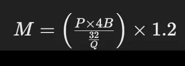
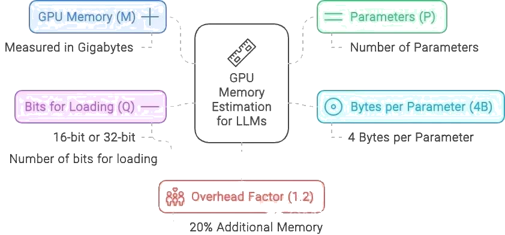
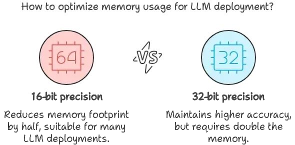
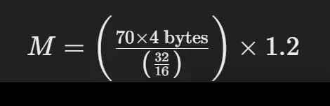
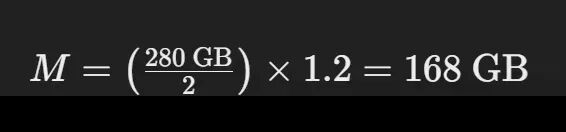

几乎在所有的大型语言模型（LLM）面试中，都有一个经常被问到的问题：”服务一个大型语言模型需要多少GPU内存？”
这个问题并非随意提出——它是检验你对这些强大模型在生产环境中部署和可扩展性理解程度的关键指标。在使用像 GPT、LLaMA 或其他任何大型语言模型时，了解如何估算所需 GPU 内存是至关重要的。
无论你处理的是一个拥有 70 亿参数的模型，还是规模大得多的模型，正确地为服务这些模型配置硬件至关重要。让我们深入探讨一下帮你估算有效部署这些模型所需的 GPU 内存的数学方法。
估算 GPU 内存的公式
为了估算服务一个大型语言模型所需的 GPU 内存，你可以使用以下公式：

其中：
- M：表示 GPU 内存，单位为千兆字节（Gigabytes）
- P：表示模型中的参数数量
- 4B：表示每个参数所使用的 4 字节
- Q：代表加载模型时所用的位数（例如，16 位或 32 位）
- 1.2：考虑了 20% 的额外开销
拆解公式要素

- 参数数量（P）：这代表了模型的大小。例如，如果你正在使用的 LLaMA 模型具有 700 亿个参数（70B），这个值就是 700 亿。
- 每参数字节数（4B）：每个参数通常需要 4 字节的内存。这是因为浮点精度通常占用 4 字节（32 位）。然而，如果你使用的是半精度（16 位），计算会相应调整。
- 每参数比特数（Q）：根据你是以 16 位还是 32 位精度加载模型，这个值会变化。16 位精度在许多大型语言模型（LLM）部署中很常见，因为它在保持足够精度的同时减少了内存使用。
- 开销（1.2）：1.2 这个乘数增加了 20% 的开销，以考虑推理过程中额外使用的内存。这不仅仅是一个安全缓冲，它对于覆盖模型执行期间激活和其他中间结果所需的内存至关重要。

示例计算
假设您想要估算服务一个具有 700 亿参数的 LLaMA 模型所需的内存，该模型以 16 位精度加载：


这个计算告诉你，若要以 16 位模式运行具有 700 亿参数的 LLaMA 模型，你大约需要 168GB 的 GPU 内存。
实际意义
理解和应用这个公式不仅仅是理论上的，它具有现实世界的影响。例如，仅有一块拥有 80GB 内存的 NVIDIA A100 GPU 是不足以支持这个模型的，你至少需要两块各有 80GB 内存的 A100 GPU，才能高效地应对内存负荷。
通过掌握这个计算方法，你将能够回答面试中的这个关键问题，更重要的是，能够在部署中避免昂贵的硬件瓶颈。下次在规划部署规模时，你将确切地知道如何估算有效服务于 LLMs（大型语言模型）所需的 GPU 内存。